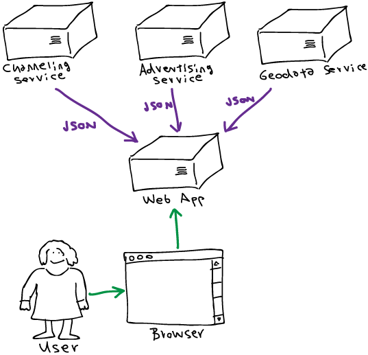
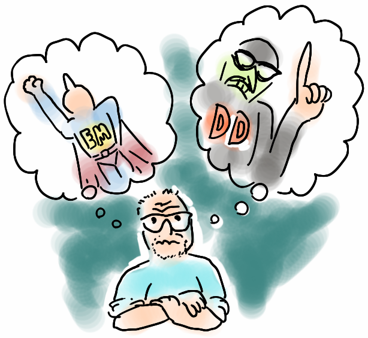

by Patrick Hund
We created a Node.js web app from scratch within 9 weeks that now serves 7.29 million visitors each month*. We used the latest and greatest incarnation of JavaScript – ECMAScript 2015, a.k.a. ES6 – for the backend and frontend alike. We spent late nights coding in gleeful frenzy, stepped into pitfalls, moaned about WTFs, scaled the dizzy heights of asynchronicity. This is our story.
* AGOF internet facts 2015-05
Hi, I'm Patrick, software engineer at mobile.de. My team and I work for mobile.de, which is Germany's biggest online marketplace for cars and other vehicles.
In June 2015, we were given a task that every software developer dreams of: throw away all the old stuff and rewrite everything from scratch. The “old stuff” being the public German home page of mobile.de, the main entry point of our platform.
We have, traditionally been a Java shop since we migrated from a big steaming pile of Perl back in 2007, but engineers at mobile.de are encouraged to explore new technologies and empowered to choose the best tool for the task at hand.
It was not hard to convince the Powers That BeTM that we should go for Node.js, although it was still fairly new technology for us.
Our system architecture has evolved from monolithic to service-oriented in the last years. The new home page was to become a pretty simple web application, a thin layer between a handful of service APIs and the client-side code. Node.js is great at integrating services and passing data through to the presentation layer, so it was an obvious choice.

A thin layer between services and client
We had a fairly tough deadline to meet. At the time we started planning our team included four JavaScript experts (including myself) and two Java experts, one of whom was on vacation until well into the project. After some experimentation with PayPal's kraken.js framework, I was confident that we could pull this off with much less deadline risk than using the “traditional” Spring/Java stack (more on why using Kraken turned out to be not such a great idea later).
For further reading on why JavaScript is a good choice for backend and frontend alike, here is a link to a great article by Eric Elliot, How to Build a High Velocity Development Team, section “Why Language Matters”.
The first phase of our project was to set up the basic scaffold of the application, including a build system that allows us to smoothly and quickly work on the software running in our local development environments.
When I evaluated PayPal's kraken.js framework early in 2015, I was euphoric about it: you run a Yeoman generator, and it sets up a basic skeleton app with Express, Dust.js templates, a Grunt build system, Bower package manager integration and a dev server that allows live reloading – everything we needed, ready to use within seconds. Heaven!
Unfortunately, when I set out to use Kraken in earnest, it turned out that the project had not been updated since April 2015 (v2.0.0-rc1). A new 2.x version has not been released ever since (at the time I'm writing this, October 2015).
So I had a choice to make:
My engineer's heart that wants to use the latest and greatest and try out cool and new stuff got the better of me and defeated the voice of reason (also known as “The You-Have-a-Deadline-Dude”) – so of course, I went for the latter option.

Engineering Man vs. Deadline Dude
The reasoning behind this decision:
During my research, I came across an interesting series of blog articles by Mozilla developer James Long, Backend Apps with webpack.
James explores the possibility to use webpack not only to bundle and optimize client-side JavaScript and CSS resources, but also the backend JavaScript code that runs on NodeJS.
I set up our build system based on his article: npm run-script commands run Gulp tasks that use webpack for building and running the software.
I was aware that using webpack for backend was an experiment, and it did turn out not to be feasible in the long run: maintaining the complex build configuration became too much of a hassle, so we recently decided to simplify things by using webpack only for the frontend.
For further reading on why webpack is awesome (for client-side resources), check out this blog article that I wrote on the subject.
We had previously used Grunt as frontend build tool in almost all our projects. Gulp is an interesting alternative, as it uses the streaming API of Node.js, allowing for some fascinating code solutions.
The Engineering Man in me still likes Gulp better than Grunt, but in hindsight, we should have gone with Deadline Dude's recommendation to stick to Grunt, as this would have allowed us to set up and maintain the build system much quicker – Gulp's streaming API has a steep learning curve.
It also turned out that some of the available Gulp plugins did not work 100% percent when running on our Jenkins CI system, causing hanging builds, which we only managed to fix by setting up some Gulp tasks to run sequentially. This defeats one of Gulp's selling points over Grunt, the ability to run tasks in parallel.
To show you how nice it is to work on a node.js project with a good build system, I've created a short demo video.
I especially like the live reloading provided by the webpack dev server that allows me to make changes to Less stylesheets and client-side JavaScript without having to hit the reload button of my browser all the time.
Thanks to sourcemaps, I can inspect my CSS and JavaScript code in the browser, which shows me the original ES6 and Less source files.
When I work on the backend, I also have very little turnaround times – nodemon detects changes of the backend ES6 code and restarts the application for me, which only takes a few milliseconds. Compared to working on a Java application, where recompiling and restarting takes a perceived eternity, this is incredible.
That's it for now – I have lots more to talk about, look forward to the next two parts of this series:
{kind=link}